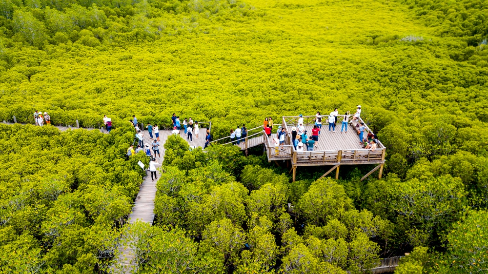
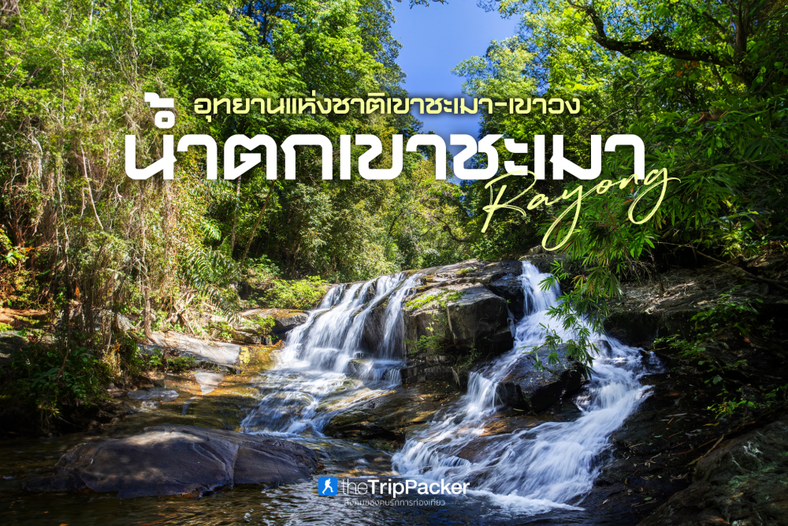

ทุ่งโปรงทอง

มหัศจรรย์ของระบบนิเวศป่าชายเลน ทุ่งโปรงทองเป็นหนึ่งในสถานที่ท่องเที่ยวทางธรรมชาติที่มีเอกลักษณ์ของจังหวัดระยอง ตั้งอยู่ในพื้นที่ปากน้ำประแส จุดเด่นของพื้นที่คือผืนป่าชายเลนที่มีต้นโปรงจำนวนมาก เมื่อต้องแสงแดด สีของยอดไม้จะเกิดความสวยงามจนกลายเป็นภาพจำของสถานที่ เส้นทางเดินภายในพื้นที่เปิดโอกาสให้นักท่องเที่ยวได้สัมผัสป่าชายเลนอย่างใกล้ชิด และเรียนรู้ระบบนิเวศที่มีความสำคัญต่อพื้นที่ชายฝั่ง ป่าชายเลนมีบทบาทหลายอย่าง ทั้งเป็นแหล่งที่อยู่อาศัยของสัตว์ แหล่งอนุบาลสัตว์น้ำ และพื้นที่ที่ช่วยลดผลกระทบจากคลื่นและการกัดเซาะชายฝั่ง การเดินทางมาทุ่งโปรงทองจึงเป็นมากกว่าการถ่ายภาพ นักท่องเที่ยวสามารถเรียนรู้ว่าธรรมชาติแต่ละส่วนมีหน้าที่และมีความสัมพันธ์กับสิ่งมีชีวิตอย่างไร พื้นที่แห่งนี้ยังช่วยให้เห็นว่า “การท่องเที่ยว” และ “การอนุรักษ์” สามารถเกิดขึ้นร่วมกันได้ หากนักท่องเที่ยวทุกคนช่วยกันรักษากฎและลดผลกระทบต่อธรรมชาติ ผู้มาเยือนควรเดินตามเส้นทาง ไม่ทิ้งขยะ ไม่จับสัตว์ และไม่ทำลายพืชพรรณ สิ่งเล็ก ๆ เหล่านี้ช่วยให้พื้นที่ยังคงความสมบูรณ์และสามารถเป็นแหล่งเรียนรู้ของคนรุ่นต่อไป
อุทยานแห่งชาติเขาชะเมา–เขาวง

จากทะเลสู่ป่าและน้ำตก ระยองไม่ได้มีเพียงชายฝั่งและเกาะเท่านั้น แต่ยังมีพื้นที่ป่าที่ช่วยให้จังหวัดมีความหลากหลายทางธรรมชาติ อุทยานแห่งชาติเขาชะเมา–เขาวงเป็นหนึ่งในพื้นที่ที่สะท้อนความงดงามของป่าและแหล่งน้ำ นักท่องเที่ยวสามารถเดินทางเข้าไปสัมผัสบรรยากาศของป่า ชมน้ำตก และเรียนรู้ระบบนิเวศที่แตกต่างจากพื้นที่ชายฝั่ง การเดินทางในพื้นที่ป่าควรคำนึงถึงความปลอดภัยและการอนุรักษ์ นักท่องเที่ยวควรเดินตามเส้นทาง ไม่ส่งเสียงรบกวนสัตว์ ไม่ทิ้งขยะ และปฏิบัติตามกฎของเจ้าหน้าที่ การได้เห็นทั้งทะเล ป่าชายเลน และน้ำตกภายในจังหวัดเดียว ทำให้ผู้มาเยือนเห็นความหลากหลายทางธรรมชาติของระยองอย่างชัดเจน
back